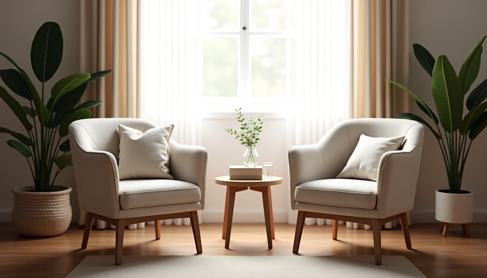

Uzm. Dr. Selcen Doğru için özel hazırlandı
Dr. Selcen Doğru için 3 site tasarımı, hepsi çalışır hâlde
Psikiyatriste ilk adımı atmak zordur; bu tasarımlar o adımı kolaylaştırmak için yapıldı: sakin bir dil, ilk görüşmenin nasıl geçtiğini anlatan bölüm, cihazda kalan öz değerlendirme ölçekleri ve birkaç dokunuşla randevu talebi. Hepsi hekim tanıtım kurallarına uygun. Telefonda açıp deneyin.

Seçenek 1 · Adaçayı
Yumuşak adaçayı yeşili ve krem; sakin ve güven veren
Canlı aç →Seçenek 2 · Gece mavisi
Derin lacivert ve kum rengi; ciddi ve akademik
Canlı aç →Seçenek 3 · Konyaaltı
Beyaz ve deniz turkuazı; Antalya'nın ferahlığı
Canlı aç →Psikiyatri sitelerinde nadir görülen, sizde çalışan özellikler:
- Randevu talebi: görüşme türü, muayenehanede ya da online, gün ve saat aralığı; DoktorTakvimi takviminiz de korunur
- PHQ-9 ve GAD-7 öz değerlendirme ölçekleri: cihazda hesaplanır, hiçbir yere gönderilmez; kendine zarar verme sorusunda kriz yönlendirmesi
- 'İlk görüşmede ne olur?' adımları ve gizlilik/KVKK bölümü; isimsiz genel soru iletme
- Çocuk ve ergen değerlendirme testleri rehberi (WISC-IV, AGTE, Gesell, Cattell, MMPI)
- Online görüşme hazırlık listesi ve 8 uzmanlık alanı için ayrı bilgilendirme sayfaları (Google'da 'Antalya EMDR', 'Antalya çift terapisi' aramaları)
- Hekim tanıtım kurallarına uygun dil: hasta yorumu, iddia, kampanya yok; bilgilendirme notu ve kriz bandı her sayfada